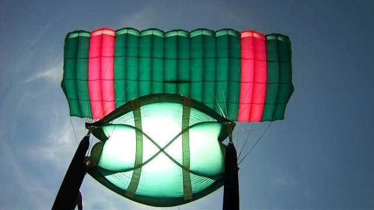

wanderlust, skydiving (certified member of Australian Parachute Federation since December 2011), fencing (registered member of Shanghai Power Fencing Club and Munich Fencing Club), ultimate frisbee (competed in international tournaments across asia and australia), paragliding, mountaineering, ultra light flying (certified), and urban spelunking.
photography, video games, anime, manga, documentary films, perceptual computing, and neuro gaming.
← Back to archive